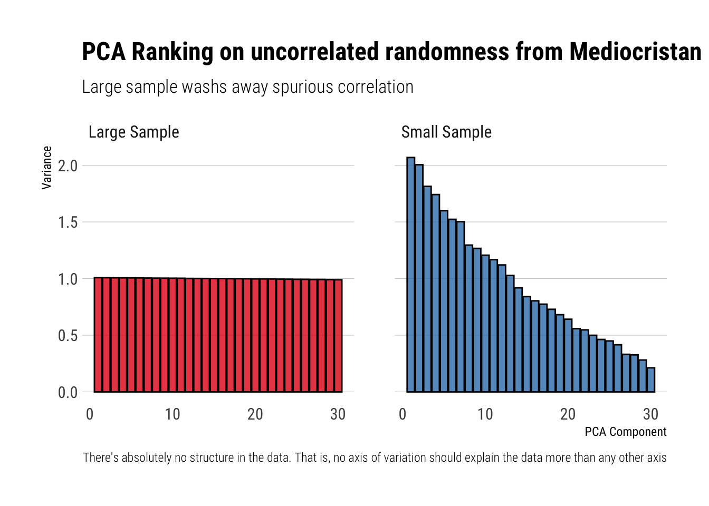
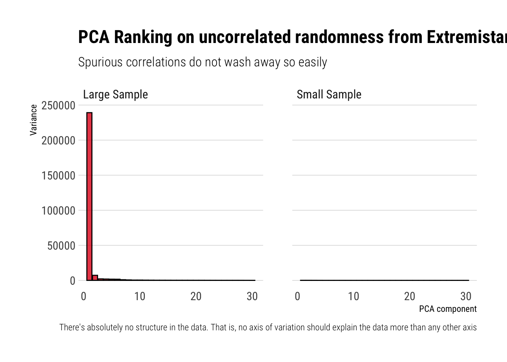

pca <- function(df) {
df %>%
prcomp(retx = FALSE, rank. = 30) -> df
df$sdev[1:30] %>%
tibble(component = seq(1, 30), 'var_explained' = .) %>%
mutate(var_explained = var_explained^2) -> pca
pca
}Spurious PCA under Thick Tails
PCA is a dimensionality reduction technique. It seeks to project the data onto a lower dimensional hyperplane such that as much of the original data variance is preserved. The underlying idea is that the vectors creating these lower dimensional hyperplanes reflect a latent structure in the data. However, what happens when there is no structure at all?
In his most recently published technical book, Taleb examines this question under two different regimes: Mediocristan and Extremistan. That is, he examines what PCA ends up doing when the data is totally random (i.e., come from i.i.d. random variables); where the randomness can come from a thin-tail, like a Gaussian, or from a thick-taile r.v.
In this post, I’ll try to replicate his findings using a small Monte Carlo experiment in R.
Mediocristan: What is should happen?
When the data comes from uncorrelated random variables, there’s absolutely no structure in the data. That is, no axis of variation should explain the data more than any other axis. Thus, Taleb writes:
In the simulation, the data that has absolutely no structure: principal components (PCs) should be all equal…
However, he continues to say that this will only happen if we have enough data:
But if there is not enough data there is an illusion of what the structure is. As we increase the data (the n variables), the structure becomes flat
The Simulation
Mediocristan
Let’s try to replicate this behavior in R. I’ll create 30 i.i.d. gaussians. First, I’ll sample 100 observations. Secondly, I’ll sample 1,000 observations. For each of these two simulated datasets, I’ll perform PCA and store the relative importance assigned to each Principle component.
gaussian_small <- rerun(30, rnorm(100)) %>%
bind_cols()
gaussian_large <- rerun(30, rnorm(10^6)) %>%
bind_cols()
pca(gaussian_small) %>%
left_join(pca(gaussian_large), by = c("component"), suffix = c("_Small Sample", "_Large Sample")) %>%
pivot_longer(cols = starts_with("var"), names_prefix = "var_explained_") %>%
rename("sample" = name,
"variance" = value) -> pcas_gaussianNow, let’s plot the results and check the different importances assigned to each of the principle components:
pcas_gaussian %>%
ggplot(aes(x = component, y = variance, fill = sample)) +
geom_col(color = "black", alpha = 0.8) +
facet_wrap(~sample) +
theme_ipsum_rc(grid = "Y") +
scale_fill_brewer(palette = "Set1") +
guides(fill = FALSE) +
labs(y = "Variance",
x = "PCA Component",
title = "PCA Ranking on uncorrelated randomness from Mediocristan",
subtitle = "Large sample washs away spurious correlation",
caption = "There's absolutely no structure in the data. That is, no axis of variation should explain the data more than any other axis") 
ggsave("mediocristan.jpg")Great! I got the same results as Taleb did. In his own words, the results are explained thus:
We can see the “flatter” PCA structure with the Gaussian as n increases (the difference between PCAs shrinks).
Thus, with reasonably enough data, the spurious correlation between the total variance in the data and the different axes of variations identified by the algorithm wash away pretty quickly. Let’s see what happens under thick-tails.
Extremistan
Just as before, I’ll create 30 random variables. With the difference being that this time the random variables will be Stabled Distributions with \(\alpha = \dfrac{3}{2}, \beta = 1, \mu = 0, \sigma = 1\). Just as before, I’ll create two datasets: one with 100 observations and other one with 1,000. For each of these, I’ll perform PCA and store the relative importance given to the identified PCAs.
stable_small <- rerun(30, rstable(100, alpha = 3/2, beta = 1, gamma = 1, delta = 0)) %>%
bind_cols()
stable_large <- rerun(30, rstable(10^6, alpha = 3/2, beta = 1, gamma = 1, delta = 0)) %>%
bind_cols()
pca(stable_small) %>%
left_join(pca(stable_large), by = c("component"), suffix = c("_Small Sample", "_Large Sample")) %>%
pivot_longer(cols = starts_with("var"), names_prefix = "var_explained_") %>%
rename("sample" = name,
"variance" = value) -> pcas_stableLet’s plot the results:
pcas_stable %>%
ggplot(aes(x = component, y = variance, fill = sample)) +
geom_col(color = "black", alpha = 0.8) +
facet_wrap(~sample) +
theme_ipsum_rc(grid = "Y") +
scale_fill_brewer(palette = "Set1") +
guides(fill = FALSE) +
labs(x = "PCA component",
y = "Variance",
title = "PCA Ranking on uncorrelated randomness from Extremistan",
subtitle = "Spurious correlations do not wash away so easily",
caption = "There's absolutely no structure in the data. That is, no axis of variation should explain the data more than any other axis")
ggsave("extremistan.jpg")Wheras before in Mediocristan the algorithm correctly identified that no axis of variation could possibly explain more than any other axis the total variation in the data, now the algorithm is fooled by the randomness coming from the thick-tail variables. Indeed, Taleb writes:
The small sample effect causes the ordered PCAs to show a declining slope. We have zero correlation on the matrix. For a thick tailed distribution (the lower section), we need a lot more data for the spurious correlation to wash out i.e., dimension reduction does not work with thick tails.
Conclusions
Just as with the mean estimations, Taleb shows that most of the statistical algorithms, this time PCA, suffer from a persistent small sample effect when dealing with randomness coming from thick tailed distribution. Thus, one must thread very carefully.
Finally, replicating his plots is still a great distraction from all the Covid noise.